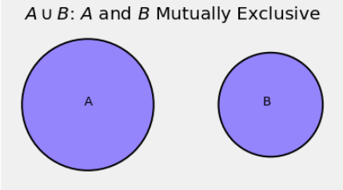

Fundamental Rules
In 1933, the Russian mathematician Andrey Kolmogorov established the axioms of the modern theory of probability. You will see that the axioms are generalizations of the natural properties of proportions that we have already used in our calculations.
We will start this section with formal defnitions of some familiar terms. We will then state the axioms and list some important consequences.
Outcome Space and Events
$\bullet$ An outcome space or sample space is the set of all possible outcomes of an experiment.
The outcome space could be finite, for example when the experiment is one roll of a die and the outcomes are the integers 1 through 6. It could also be infinite, for example if the experiment consists of throwing a dart randomly at the unit interval $(0, 1)$. The possible outcomes consist of all the numbers between 0 and 1.
The outcome space is usually denoted $\Omega$, the upper case Greek letter omega. An individual outcome is often denoted $\omega$, which looks like a w but is really the lower case Greek letter omega.
$\bullet$ An event is a subset of the outcome space.
For example, "the die shows a multiple of 3" is the subset $\{3, 6\}$ of the outcome space $\{1, 2, 3, 4, 5, 6 \}$. The event "the dart falls to the right of 0.75" is the subset $(0.75, 1)$ of the outcome space $(0, 1)$.
Events are typically denoted by early letters of the alphabet such as $A$, $B$, etc. It is worth noting that the outcome space $\Omega$ is itself an event and is certain to occur: every outcome is an element of $\Omega$. Also note that the empty set $\phi$ is an event.
Motivation for the Axioms
Probability is a numerical function on events that satisfies three conditions that are reasonable based on our natural sense of what probabilities should be. Before we write the formal axioms, let's list some conditions that make sense based on our calculations thus far.
First, it is natural to measure probabilities on the percent scale. That is, they should be numbers between 0% and 100%, or between 0 and 1 on the decimal scale.
Next, we have to think about how events might combine with each other, and how their probabilities should be combined.
One way in which we can combine two events is to look at their union. That's the event that at least one of the two events occurs. An example of such a union is "the teen used Facebook or Twitter".
In the Venn diagram below, the individual circles represent the event $A$ and the event $B$. The blue region represents their union. That's the event that at least one of $A$ and $B$ occurs.

It's a great idea to think of probability as a measure like length, area, or volume. Indeed, advanced classes in probability are based on an area of mathematics called "measure theory". Area is the natural measure when we use Venn diagrams: think of $P(A)$ as the area of the circle $A$.
As we have seen, the chance that $A$ or $B$ occurs is $P(A \cup B)$ and it depends on the extent of the overlap between $A$ and $B$. The main axiom of probability sets out a simple rule in the case of no overlap.
As you know from set theory, sets $A$ and $B$ that have no elements in common are called disjoint. In the language of probability, events $A$ and $B$ that have no outcomes in common are called mutually exclusive.
The intersection of two events is the set of outcomes that the two events have in common. Saying that events $A$ and $B$ are mutually exclusive is the same as saying that their intersection is empty: $A \cap B = \phi$.
The axiom says that if events are mutually exclusive then the chance of their union is the sum of their chances. As we observed in an earlier section, this is apparent from the Venn diagram.

The Axioms
Kolmogorov's set out three axioms of probability. Together they imply all the natural conditions we have discussed above. As you will see, they imply far more. Indeed, even the most advanced probability theory is derived based on just these three axioms.
- $P(A) \ge 0$ for every event $A$
- $P(\Omega) = 1$
- Addition Rule: If events $A_1, A_2, A_3, \ldots $ are mutually exclusive then $P(\bigcup_{i=1}^\infty A_i) = \sum_{i=1}^\infty P(A_i)$
The second axiom just says that the whole outcome space has chance 100%, that is, with chance 100% the experiment is going to have an outcome.
Notice the generalization in the third axiom. Kolmogorov wrote the addition rule for the union of an infinite list of mutually exclusive events instead of just two. Formally, infinitely many events $A_1, A_2, A_3 \ldots $ are mutually exclusive if no pair of them has an overlap. That is, for all $i \ne j$, the intersection $A_i \cap A_j = \phi$.
Complement and Set Difference
The entire course is going to consist of consequences of the axioms. We will start with the most straightforward of these. You should note that we have already used them in earlier sections.
The consequences can all be formally derived from the axioms but in this course it is enough to have an intuitive sense of why they are true based on diagrams or properties of proportions.
- Complement Rule: If $A$ is an event, the event "$A$ does not occur" is called the complement of $A$ and is denoted $A^c$. This is standard terminology and notation in set theory. The complement rule says that $P(A^c) = 1 - P(A)$.
We used the complement rule when we found the chance that a randomly sampled teen does not use Facebook most often of all online platforms.
- Difference Rule: If the event $B$ implies the event $A$, then $B \subseteq A$. The set difference $A \backslash B$ is the set of all outcomes that are in $A$ and not in $B$. This is the blue region in the Venn diagram below.

The difference rule says that if $B \subseteq A$ then $P(A \backslash B) = P(A) - P(B)$.
We used the difference rule when we found the chance that a randomly sampled teen used Facebook but used some other platform more often.
Boole's (and Bonferroni's) Inequality
As we have already seen from Venn diagrams, for any two events $A$ and $B$ the chance $P(A \cup B)$ is maximized when $A$ and $B$ are mutually exclusive, and therefore $P(A \cup B)$ is at most the sum $P(A) + P(B)$:
$$ P(A \cup B) ~ \le ~ P(A) + P(B) ~~~~~ \text{for all events } A, B $$
Equality is achieved when $A$ and $B$ are mutually exclusive.
It is no surprise (and can be proved) that an analogous result is true for any $n$ events $A_1, A_2, \ldots, A_n$.
Boole's Inequality:
$$ P(\bigcup_{i=1}^n A_i) ~ \le ~ \sum_{i=1}^n P(A_i) ~~~~~ \text{for all events } A_1, A_2, \ldots, A_n $$
This inequality is due to the English Mathematician George Boole after whom Booleans are named. He actually showed the inequality for infinite lists of events, but finite lists will be enough for our purposes.
The inequality is also called a Bonferroni inequality because is a special case of a sequence of inequalities due to the Italian mathematician Carlo Emilio Bonferroni. This is the name most commonly used in data science in situations where multiple quantities are being estimated using data from the same random sample.
The inequality provides an upper bound on the chance of the union of events. The bound is the sum of the chances of the individual events.
In some cases it might be a very crude bound. For example, if $P(A) = 0.7$ and $P(B) = 0.8$, then the inequality says $P(A \cup B) \le 1.5$, which is true but rather silly as we already know $P(A \cup B) \le 1$.
In other cases the bound might be excellent. For example, if the events in the union are mutually exclusive then the bound is in fact equal to the chance of the union, by the third axiom. In general, the closer the events are to being mutually exclusive, the closer the bound will be to the exact chance of the union.